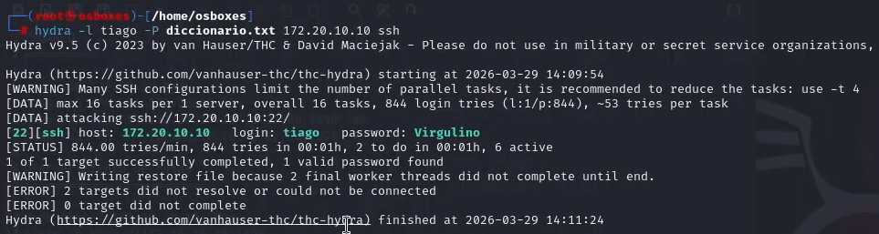
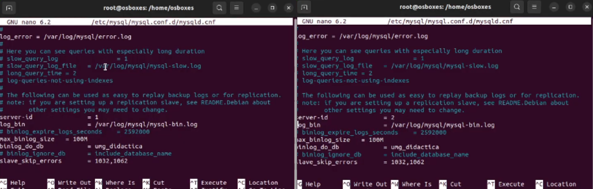
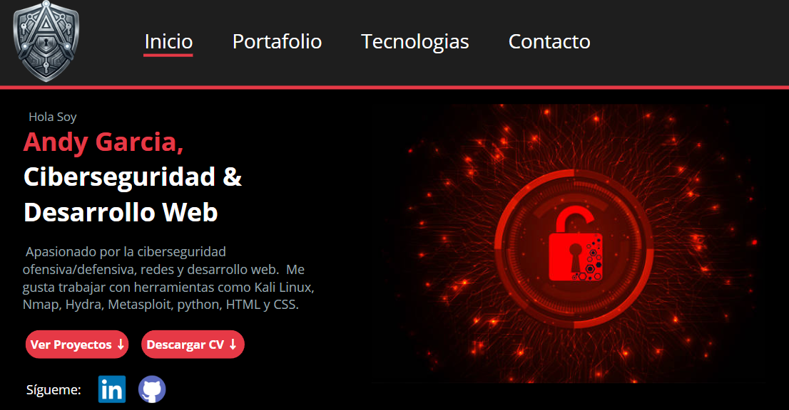

Hola soy
Andy Garcia,
Ciberseguridad &
Desarrollo Web
Apasionado por la ciberseguridad ofensiva/defensiva
redes y desarrollo web, actualmente soy estudiante
de la Universidad Mariano Gálvez de Guatemala
Sigueme en:
Proyectos Destacados
Laboratorios practicos y proyectos academicos

Lab Lampião — Dirty COW
Explotación de máquina vulnerable con Hydra, Dirty COW y configuración de DMZ.

Configuración de replicación
Master-Slave entre 2 servidores MySQL en VirtualBox. Sincronización de datos

Portafolio Personal
Portafolio desarrollado desde cero con HTML, CSS y JavaScript puro. Diseño dark rojo profesional.
Habilidades
Algunas de las Tecnologias que manejo son las siguientes
Ciberseguridad
- Kali Linux
- Nmap
- Hydra
- Metasploit
- Wireshark
- Tcpdump
Redes
- OpenVPN
- Squid Proxy
- Iptables
Sistemas / Virtualización
- Ubuntu
- VirtualBox
Desarrollo
- Python
Bases de datos
- SQL Server
- Mysql Workbench
Sobre mi
Aprendo haciendo, no solo leyendo
Estudiante de Ingeniería en Sistemas, con experiencia sobre:
ciberseguridad, redes y desarrollo web.
Laboratorios prácticos con Kali Linux
Configuración de redes y VPN